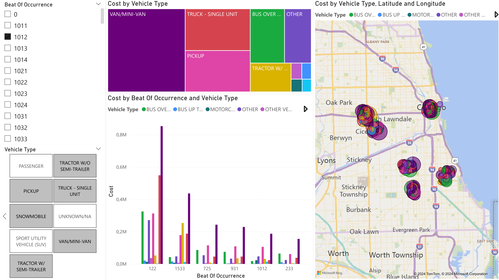
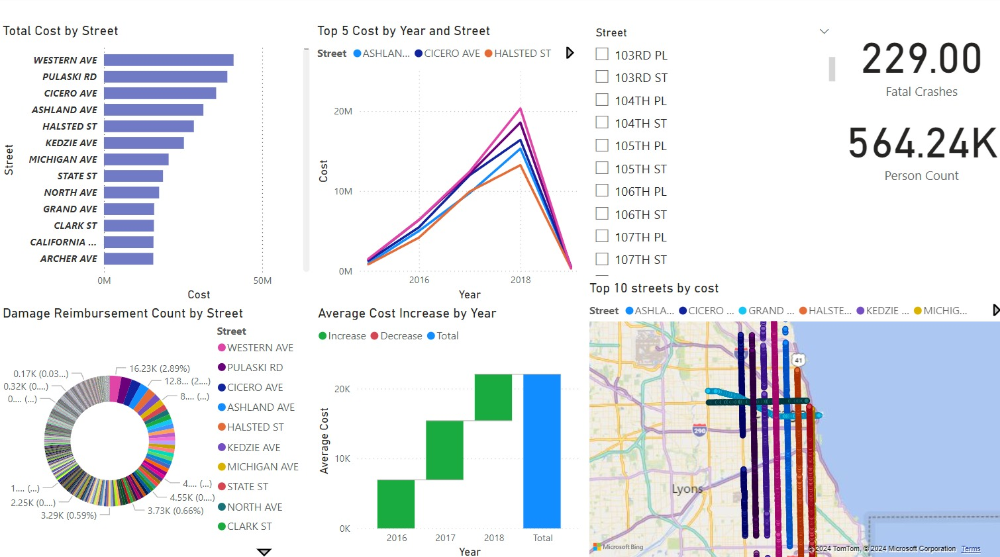
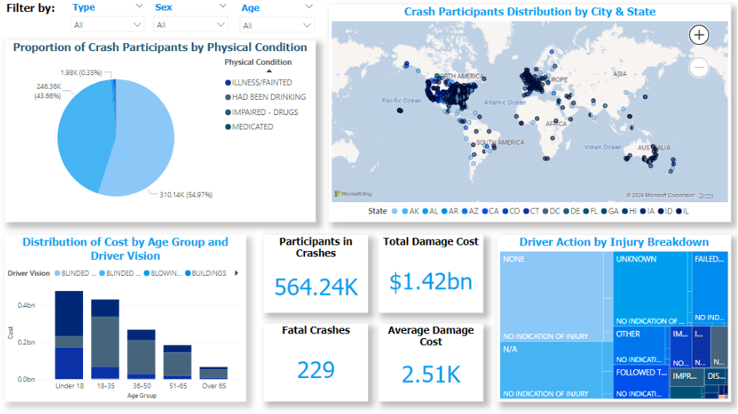

For this class project me and my colleagues developed an end-to-end business intelligence solution analyzing Chicago traffic crash data to support a mock insurance company decision-making through dimensional modeling, ETL pipelines, OLAP cubes, and interactive Power BI dashboards.
The complete project is available on GitHub at lds-dw-modelling. Collaborating with my colleagues, we divided responsibilities across data cleaning, schema design, ETL development, OLAP implementation, and dashboards creation. The classes taught me the complete data warehousing lifecycle from raw data to actionable business insights and I and my colleagues applied those concepts in the project.
This project was my first opportunity to apply the comprehensive data warehousing and OLAP concepts taught throughout the Decision Support Systems course. While the lectures provided the theoretical foundation, implementing a complete business intelligence solution from raw data to interactive dashboards revealed the practical complexities and trade-offs inherent in real-world DSS development.
In class, we learned about dimensional modeling, the distinction between fact tables and dimension tables, the principles of star and snowflake schemas, and the importance of grain definition. When we designed our fact table, these principles came to life. The decision to use a snowflake schema rather than a pure star schema wasn't arbitrary, it directly applied the course material on normalization trade-offs.
The lectures explained that snowflake schemas reduce redundancy by normalizing dimension tables, but at the cost of more complex queries requiring additional joins. Our choice to normalize some dimensions into more sub-dimensions showed us this trade-off.
The course covered ETL (Extract, Transform, Load) processes and the critical importance of data quality in decision support systems. Lectures emphasized the 80/20 rule: 80% of a data warehousing project's effort goes into data cleaning and ETL, with only 20% on reporting and analysis. I initially thought this was an exaggeration, but after spending weeks on data preprocessing, transformation, and quality validation, I completely understand it now.
The SSIS (SQL Server Integration Services) classes taught us about the core transformation components: Lookup, Derived Column, Conditional Split, Aggregate, and Sort. In the project we used those tools in a chain to create complex data flows.
The lectures on data quality dimensions turned out to be very useful when we handled missing values across numerous columns in the provided tables. The course taught us to document data quality decisions and establish business rules for handling anomalies.
One aspect we had to figure out beyond the course material was the geocoding API integration for recovering missing latitude/longitude values. The lectures covered external data enrichment conceptually, but the practical challenges of API use required independent problem-solving.
The OLAP (Online Analytical Processing) lectures introduced us to multidimensional data modeling, measure groups, dimensions, hierarchies, and the fundamental operations of roll-up, drill-down, slice, and dice. The course used the classic sales data warehouse example which provided clear conceptual understanding.
The concept of calculated measures, introduced in class through examples like profit margins and year-over-year growth, became much more complex in our MDX queries. The course taught us the WITH MEMBER syntax and the CURRENTMEMBER function, but applying these to compute relative time calculations took significant experimentation. Understanding that MDX operates on dimensional contexts rather than row-by-row like SQL was essential, but internalizing it required writing failing queries, debugging, and gradually building intuition about when calculations execute in the MDX evaluation pipeline.
The MDX (Multidimensional Expressions) portion of the course introduced the basic query structure: SELECT on COLUMNS and ROWS, FROM the cube, WHERE for slicing. We learned key functions like TOPCOUNT, Filter, Hierarchize, NON EMPTY, and aggregate functions (SUM, AVG, MEDIAN, MAX). However, the course examples were relatively straightforward.
The course's final section covered dashboard design principles: identifying KPIs, choosing appropriate visualizations, enabling interactivity, and designing for different user roles. The lectures emphasized that dashboards should answer business questions, not just display data.
The performance optimization required for our 257,925 crash records pushed us to learn about indexing strategies, query execution plans, and OLAP cube processing optimization. The course mentioned that performance matters, but we had to independently research SQL Server index types, understand when to use clustered versus non-clustered indexes, and learn about SSAS partition strategies for large fact tables. When our initial cube processing took over 10 minutes, we implemented incremental processing, a technique we found in Microsoft documentation rather than course lectures.
We began with three CSV files from Chicago's traffic crash database extracted from the Chicago Data Portal: People.csv, Vehicles.csv, and Crashes.csv.
The People table contained demographic and behavioral information about the peoples involved in the crashes. Across 14 columns with missing values, incorrect data types, and inconsistent representations we applied nine cleaning operations to fill and normalize the content of the file.
The Vehicles table provided info about crash-involved vehicles, including unit types, license plates, defects, and temporal information. Enhancements to the file focused primarily on consolidating missing and inconsistent values.
The Crashes dataset contained spatial, temporal, and severity information, with several data quality improvements applied. Other than the usual missing data handling, geographic data received significant improvement through geocoding API integration, filling most missing LATITUDE, LONGITUDE, and POINT values using the available STREET_NAME and STREET_NO fields. On top of that, a new derived feature, DELTA_TIME_CRASH_DATE_POLICE_REPORT_DATE, was created to quantify reporting delays.
During classes we learned the difference between Star,
Snowflake, and Fact Constellation (otherwise named
Galaxy) Schemas, and we found the
Snowflake schema to be the best fitting for our mock
insurance company's analytical needs. This structure
reduced data redundancy while allowing
efficient querying of complex relationships.
We developed four queries addressing specific insurance company analytical needs.
| Query | Purpose | Tables involved | Methodology |
|---|---|---|---|
| Crash Frequency by Participant | Analyzes crash involvement frequency for all participants across different years to identify individuals with higher crash frequencies. |
|
Extracted demographic details, linked to retrieve crash IDs, joined to extract crash years. Data aggregated by counting crashes per participant per year, generating "Total Crashes" metric, sorted chronologically. |
| Day-Night Crash Index by Police Beat | Calculates a day-night crash index per police beat by comparing vehicle counts in nighttime incidents (9 PM to 8 AM) versus daytime (8 AM to 9 PM). |
|
Created Time_Category field classifying crashes as "Day" or "Night". Data split by Time_Category, aggregated by Beat_of_Occurrence, summed vehicle counts. Final ratio calculation handled division by zero cases. |
| Age-Based Crash Ratios by Location and Weather | Calculates the ratio of people under 21 to those over 21 for each quarter, weather condition, and beat of occurrence. Analyzes how seasonality, weather, and location affect crash proportions by age. |
|
Used SSIS lookup operations to join tables. Counted individuals over and under 21, aggregated by required columns (quarter, weather, location), and created ratio column. |
| Interstate Movement Analysis for Elderly Drivers | Examines the ratio of older individuals (over 60) involved in interstate movements in Chicago, analyzing residence location and vehicle registration state. Incorporates quarterly variations to capture seasonality. |
|
Used lookup transformations to retrieve necessary attributes. Classified individuals as over/under 60, aggregated by quarter and license plate registration, calculated ratio, and sorted results. |
We designed a multidimensional OLAP cube using SQL Server Analysis Services (SSAS) to enable sophisticated analytical queries. The cube stores and analyzes Chicago traffic crash data using dimensions for Person, Crash, Vehicle, and DateTime.
The Person dimension includes attributes like Person_ID, Injury_Classification, Physical_Condition, Age, Type, Sex, Driver_Action, Driver_Vision, Age_Group, City, and State.
The Crash dimension has a complex structure with Crash_ID, Crash_Date_ID, Police_Notified_Date_ID, Crash_Location_ID, Crash_Condition_ID, Injury_ID, Primary_Contributory_Cause, Secondary_Contributory_Cause, and various location attributes.
The Vehicle dimension contains Vehicle_ID and Vehicle_Type. The DateTime dimension includes Date_Time_ID, Day, Year, Month_Name, and Time in 24-hour format.
The DateTime dimension includes a hierarchy: Year → Month → Day → Time. Following OLAP best practices, access to these hierarchical attributes is not directly visible to end-users.
The Damage Reimbursement measure group captures financial data including Cost, Damage_Reimbursement_Count, and Average_Cost, essential for assessing financial impact. The Person measure group provides insights into the number and type of individuals involved, including Person_Count, Count_of_Person_Type, and Fatal_Crashes.
After building and defining the structure, we processed the data and deployed the cube on the OLAP server, enabling MDX queries and analysis directly within the cube environment.
We developed five MDX queries demonstrating different analytical capabilities.
| Query | Purpose | Tables Involved | Methodology |
|---|---|---|---|
| Total Damage Costs by Location and Month | Shows total damage costs for each location and month with grand totals. |
|
Used WITH MEMBER to define custom grand totals for months and locations. Hierarchize function orders months chronologically with yearly total. Filter excludes All member for locations, showing only individual locations plus grand total. |
| Year-over-Year Damage Cost Changes | Shows damage cost changes percentage-wise relative to the previous year for every location. |
|
Two WITH MEMBER clauses: one to name damage cost of previous year, another to create percentage change measure. Displayed 2017 data with cost and percentage change on columns, crash location in rows. |
| Highest Damage by Vehicle Type and Year | Shows for each vehicle type and year the information and total damage costs of the person with the highest reported damage. |
|
Selected Total Cost as sum of each current member of Person. Rows use nested function with non-empty values, generating year-vehicle type combinations, then extracting top 1 person per combination measured by cost. |
| Median and Maximum Reporting Delays | Calculates median and maximum time delays between crash occurrence and police notification for each beat of occurrence, providing insights into typical and extreme reporting delays. |
|
Defined TotalDelaySeconds to compute total delay by extracting and converting components (days, hours, minutes, seconds). Calculated median and maximum delays using MEDIAN and MAX functions, formatted into human-readable strings with null handling. Sorted by median delay descending. |
| Most Frequent Crash Causes with Weighted Analysis | Identifies the most frequent crash cause for each year, calculates associated total damage costs, and determines the overall most frequent crash cause. |
|
Weighted primary crash factor twice as much as secondary factor using WeightedCauseCount. Used TOPCOUNT to determine most frequent cause per year by weighted frequency. Aggregated TotalCostPerYearTopCause for top cause. Identified overall most frequent cause via TOPCOUNT without time restrictions. |
We created three comprehensive dashboards in Power BI to visualize key insights for insurance company stakeholders.
The dashboard showcases the distribution of total damage costs by vehicle category with interactive filtering capabilities. Two primary filters on the left allow users to select specific beats of occurrence and vehicle types dynamically. The middle column features a treemap at the top highlighting total damage costs for selected vehicle categories, providing a hierarchical overview of cost distributions. Below, a bar plot displays the same data with beat of occurrence comparison context in a detailed format.
On the right, a map visualization provides spatial insights, focusing on the Chicago area by default when all beats are selected. The map dynamically updates to reflect chosen beats, allowing exploration of specific regions and identification of areas with higher damage cost concentrations. Users can manipulate filters to adapt displayed data, enabling nuanced analyses of relationships between geographical locations and vehicle-related damage costs. 
The dashboard provides insights into cost and damage reimbursement by street, helping the insurance company locate and analyze mobility dynamics when granting insurance agreements or paying damages. The visualizations include total cost metrics, average cost increase by year, count of damage reimbursements by street, and a street map showing the top 10 streets with highest costs in Chicago. These visualizations together help determine new policies for the insurance company by revealing patterns in street-level crash costs and frequencies. 
The People dashboard provides actionable information about crash participants for business analysts. At the top left, a pie chart titled "Proportion of Crash Participants by Physical Condition" identifies the impact of factors such as impairment due to drugs, alcohol, or medical conditions, helping understand the role of human factors. The map visualizes geographical concentrations of crashes, allowing insurers to identify high-risk regions for adjustments.
The bottom left bar chart provides insight into crash costs by age group and vision impairments, revealing that younger drivers (under 18) and those with specific vision conditions incur higher costs, identifying high-risk demographics for targeted pricing. The treemap "Driver Action by Injury Breakdown" uncovers how specific driver behaviors (failure to act, distracted driving) correlate with injuries, showing potential needs to adjust premiums for policyholders exhibiting these patterns.
Central KPIs display Participants in Crashes, Total Damage Cost, Fatal Crashes, and Average Damage Cost, providing an immediate overview of claim volume and financial exposure crucial for forecasting payments and ensuring sufficient reserves. 